14.你的应用程序的自动化¶
在上一章中，你在一些终端命令的顶部添加了一个图形用户界面，使它们更容易使用。
现在，你要开放你的应用程序的一些功能，以便macOS的其他部分可以访问它们，并使用它们进行自动化。
你将通过两种方式做到这一点：为全系统的Services菜单提供服务，以及发布一个快捷方式供Shortcuts应用程序使用。
什么是自动化？¶
对于任何应用程序，有两种形式的自动化。第一种是应用程序本身执行一项任务，特别是当这项任务是漫长的、繁琐的或棘手的。ImageSipper已经做到了这一点。想象一下，为一个大文件夹中的每张图片生成一个缩略图是多么无聊和耗时。现在，你只需点击几下就可以做到了。
另一种方法是将你的应用程序的各种功能提供给其他应用程序或系统服务，以便你的应用程序可以成为自动化工作流程的一部分。这就是你在本章中要启用的。
当在macOS上看自动化时，有几种选择。其中一个最常见的是Services菜单。这是一个子菜单，出现在每个应用程序自己的应用程序菜单中。你也可以在上下文菜单中找到Services。Right-click任何文本或任何文件，看看你可以使用哪些服务。你在菜单中看到的内容取决于你所选择的内容和你所安装的应用程序。
自动化的另一种可能性是脚本。你可以使用shell脚本、AppleScripts和其他各种语言--甚至是Swift! 脚本语言不在本书的讨论范围内，但它们是自动化的另一个方面。
最后一个选择是通过自动化应用程序。苹果公司提供了两个这样的应用程序。Automator已经存在了一段时间，但在2021年WWDC上，苹果为Mac引入了Shortcuts。此前，这在iOS上是可用的。
Automator可能很有用，它有一个广泛的动作库，以及使用AppleScript或shell脚本添加自定义动作的能力。然而，快捷方式应用使你能够直接从你的应用中发布动作。
在本章中，你将提供一个服务并发布一个快捷方式。
添加一个服务¶
首先，你要添加一个服务。在第10章"创建一个基于文档的应用程序"中，你设置了文件类型，这样应用程序就可以打开Markdown文件。ImageSipper不是一个基于文档的应用程序，所以你不能这样做。相反，你要在Services菜单中添加一个Open in ImageSipper的菜单项。这将在应用程序中打开选定的图像文件或文件夹，必要时启动应用程序。
给你的应用程序添加服务需要两个步骤。首先，你要编辑应用程序的Info.plist，使其菜单项在适当的时候出现在服务菜单中。其次，你要写代码来处理服务菜单的选择。
编辑Info.plist¶
打开你上一章的项目或者使用本章下载资料中projects文件夹中的starter项目。
在旧版本的Xcode中，你会在项目导航器中看到Info.plist文件，但在Xcode 13中，它是隐藏的，直到你在目标设置中改变它。
在Project navigator的顶部选择项目，点击ImageSipper目标，从顶部的标签中选择Info。
Right-click在Custom macOS Application Target Properties部分的最后一行，从弹出的菜单中选择Add Row：

开始输入Services（大写S），当自动完成找到它时，按Return选择它。再按一次Return来添加新行。这就给你的Info.plist添加了一个新的数组。
现在，你可以在项目导航器中选择Info.plist。由于Xcode隐藏了默认值，所以从那里编辑它比较容易。Option-click Services旁边的披露箭头来完全展开它：
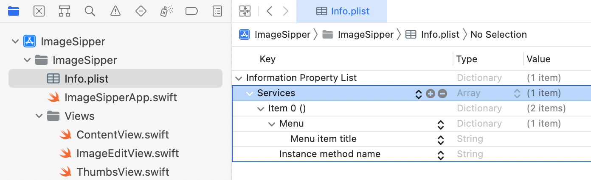
你的新的Services数组有一个元素，标记为Item 0。它是一个有两个必要元素的字典。这两个元素目前是空白的，等待取值。
填入服务项目¶
选择Menu item title行，然后点击它的Value 列，开始编辑。这将设置服务菜单中该项目的标题。输入Open in ImageSipper，然后按Return键移动到下一栏。
这是Instance method name，持有服务将调用的方法的名称。你还没有一个方法，但把名称设为openFromService：

现在，你要在Item 0字典中再添加四个元素（行）：
- 传入服务端口名称：
String - 发送类型：
Array NSSendFileTypes：ArrayNSRequiredContext：Dictionary
Note
向Info.plist添加行的方法有多种，本节特意展示了几种不同的选项。一旦你知道什么是可能的，你就可以选择你喜欢的。
在条目下面的空白处Right-click并选择Add Row。选择Incoming service port name，并将其值设置为ImageSipper。这告诉服务要调用的应用程序的名称。
接下来，right-click最后一行，选择Add Row并从菜单中选择Send Types。按Return添加这个数组属性。
展开Send Types，将Item 0的值设为string。这意味着当一个应用程序请求这项服务时，服务方法会收到一个String。
发送类型是一个NSPasteboard.PasteboardType。Apple的NSPasteboard.PasteboardType文档列出了可能的类型。
到目前为止，你所添加的行都有编辑器知道的、可以自动完成的名字。接下来，你将添加一些未知的条目。
Note
你要从这个列表中添加两个Services Properties。
首先折叠Send Types，然后点击名称旁边的小+按钮。如果你在Send Types展开的情况下这样做，你就会在它的数组中增加一个元素。通过先折叠，你是在向Services ▸ Item 0字典添加。
设置新行的名称为NSSendFileTypes。按Return键，类型应该被设置为Array，但如果它仍然是String，点击它并从上下文菜单中选择Array。
展开新的数组，点击它的+按钮，这样你在数组中有两个元素。该服务将允许你选择图像文件或文件夹，这就是你设置的地方。
将NSSendFileTypes ▸ Item 0的值设置为public.folder。然后，将NSSendFileTypes ▸ Item 1的值设置为public.image：
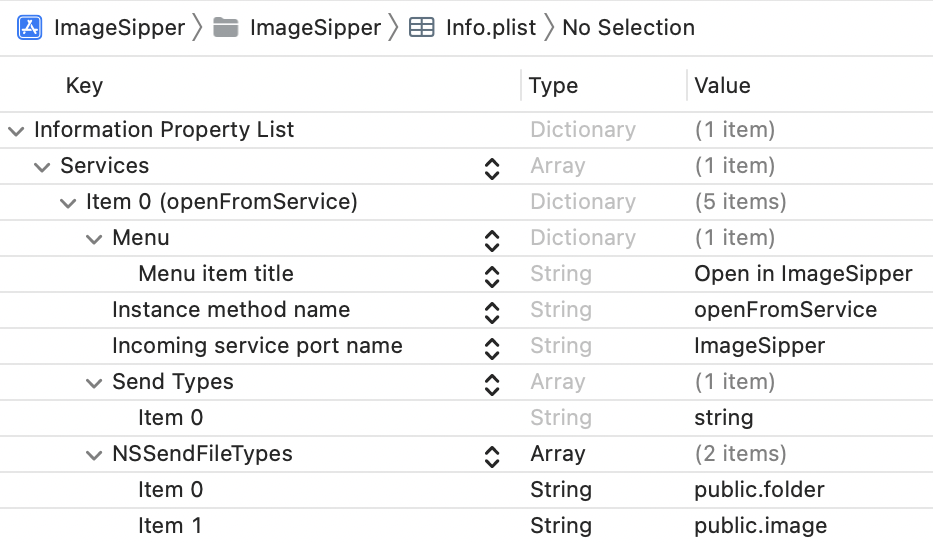
苹果公司提供了一个System-Declared Uniform Type Identifiers的列表，你可以用它来决定在这里添加什么。
现在你已经建立了一个服务，菜单项的标题是Open in ImageSipper，它为ImageSipper应用程序中的openFromService方法提供一个String。它只适用于文件夹或图像文件的文件类型。
设置上下文¶
你几乎已经完成了Info.plist。还有一个步骤，而且是很重要的步骤。你的Mac上有很多应用程序有服务，你不希望服务菜单每次都显示它们。所以你要为服务设置一个context，告诉系统何时适合显示你的特定服务。在这种情况下，你只想在用户选择图像文件或文件夹时显示它。
折叠NSSendFileTypes并点击其+按钮。输入新行的名称：NSRequiredContext. 它的默认类型是Array，所以点击它，将其类型改为Dictionary：
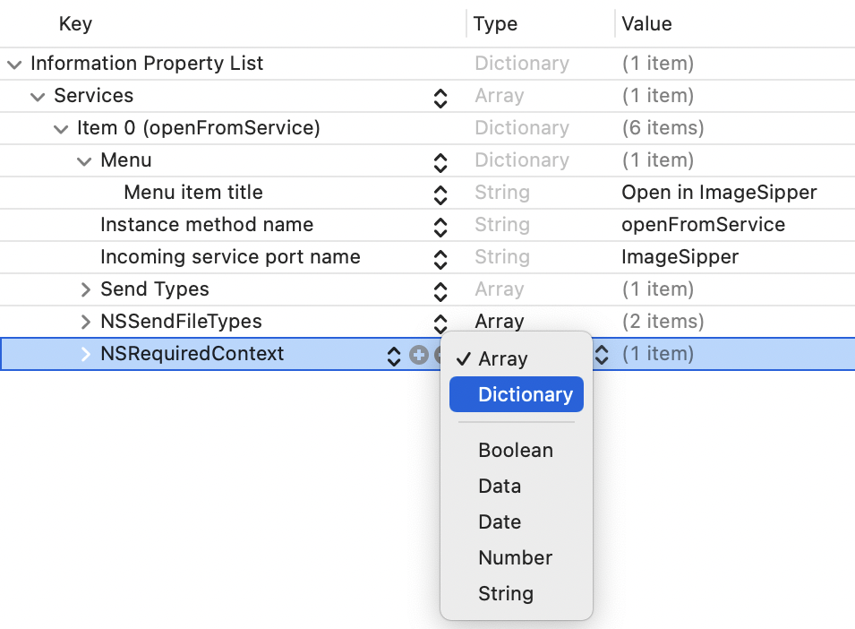
展开新的行。当你添加元素到一个数组中时，Xcode 给它们分配了名字，如 Item 0, Item 1等等。对于一个字典，你可以设置名称和的值。
将New item字典元素的名称改为NSTextContent，值改为FilePath。现在，服务菜单只知道当你选择了一个文件路径，并且该文件路径指向一个图像或文件夹时，才会显示你的菜单项。
这是很重要的设置工作! 要检查原始数据，在项目导航器中right-click Info.plist并选择Open As ▸ Source Code来查看XML：
<?xml version="1.0" encoding="UTF-8"?>
<!DOCTYPE plist PUBLIC "-//Apple//DTD PLIST 1.0//EN" "http://www.apple.com/DTDs/PropertyList-1.0.dtd">
<plist version="1.0">
<dict>
<key>NSServices</key>
<array>
<dict>
<key>NSMenuItem</key>
<dict>
<key>default</key>
<string>Open in ImageSipper</string>
</dict>
<key>NSMessage</key>
<string>openFromService</string>
<key>NSPortName</key>
<string>ImageSipper</string>
<key>NSSendTypes</key>
<array>
<string>string</string>
</array>
<key>NSSendFileTypes</key>
<array>
<string>public.folder</string>
<string>public.image</string>
</array>
<key>NSRequiredContext</key>
<dict>
<key>NSTextContent</key>
<string>FilePath</string>
</dict>
</dict>
</array>
</dict>
</plist>
Note
当使用自动完成功能添加条目时，你会得到一个友好的名字，如Incoming service port name。在幕后，这有一个AppKit的标题：NSPortName在这种情况下。XML文件只显示AppKit的标题。
点击后退按钮，返回到属性列表视图。
这就完成了第一部分的设置。你已经配置了Info.plist，这就足以开始测试了。
测试服务菜单¶
现在构建并运行该应用程序。它看起来没有变化，但在幕后，它已经注册了你的新服务。切换到Finder，选择任何图像文件，然后right-click。你是否看到一个Services菜单或在上下文菜单的末尾有一个Open in ImageSipper项目？如果你右击一个文件夹呢？
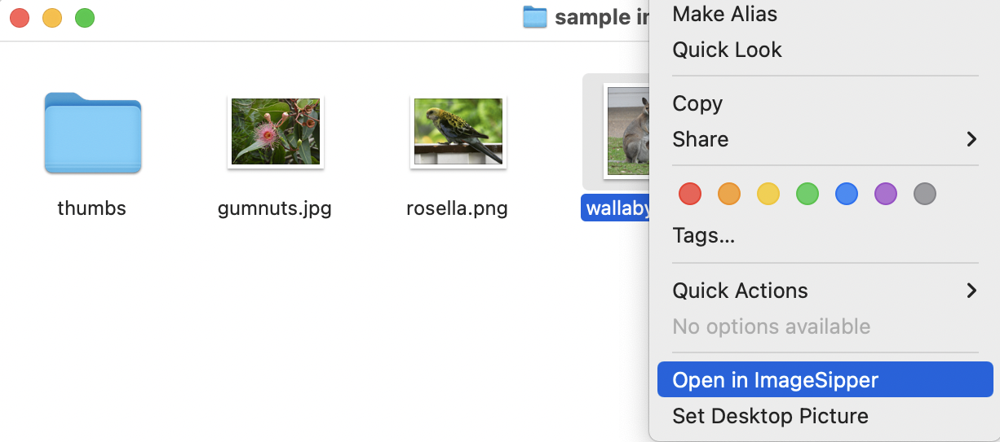
如果你没有看到这个，不要惊慌! 尽管你做了很多努力，Open in ImageSipper可能没有显示出来。你没有做错什么，但是macOS只是定期扫描新的服务，所以你的服务可能不会立即出现。
为了解决这个问题，你将使用pbs终端命令。打开Terminal，输入man pbs来阅读它的作用。当你完成后，按q退出。
如果你直接运行pbs命令，终端会返回zsh: command not found: pbs。这是因为pbs只在调试服务时使用，所以macOS把它隐藏在一个文件夹中，终端不会扫描命令。
仍然在Terminal中，运行这两个使用全路径的命令：
/System/Library/CoreServices/pbs -flush
/System/Library/CoreServices/pbs -update
你已经强迫macOS重置和刷新服务列表，所以现在出现了Open in ImageSipper 。除了直接右键点击文件和文件夹外，还可以测试选择一个图像文件或文件夹，然后打开Finder ▸ Services菜单：

选择一个文本文件，并确认Open in ImageSipper没有出现在Finder ▸ Services菜单或右键菜单中。
你的应用程序现在发布了一项服务，只有在适当的时候才能使用。很好! 如果你现在尝试使用它，ImageSipper会打开，但Finder会冻结一段时间，因为你还没有设置好这个方法。所以现在，你需要处理传入的服务调用。
处理服务调用¶
在你的应用程序能够响应服务调用之前，它需要一个servicesProvider。打开ImageSipperApp.swift，在底部添加这个新类：
class ServiceProvider {
}
你已经可以使用这个类了，尽管它是空的。
在ImageSipperApp的顶部，声明一个属性来保存ServiceProvider：
var serviceProvider = ServiceProvider()
在ContentView上设置environmentObject后，添加这个：
.onAppear {
NSApp.servicesProvider = serviceProvider
}
现在，当ContentView出现时，它将把NSApp的servicesProvider设置为你的ServiceProvider类的新实例。NSApp是NSApplication.shared的简写，它是对运行中的应用程序的引用。
接下来，你要填入方法。在Info.plist中，你把方法的名字设置为openFromService，所以把它添加到ServiceProvider类中：
// 1
@objc func openFromService(
_ pboard: NSPasteboard,
userData: String,
error: NSErrorPointer
) {
// 2
let fileType = NSPasteboard.PasteboardType.fileURL
guard
// 3
let filePath = pboard.pasteboardItems?.first?
.string(forType: fileType),
// 4
let url = URL(string: filePath) else {
return
}
// 5
NSApp.activate(ignoringOtherApps: true)
// handle url here
}
这里发生了什么？
- 使用预期的名称声明该方法。你必须将该方法标记为
@objc，以便服务能够访问它。该方法的参数是每个服务调用所发送的参数。 - 你感兴趣的唯一参数是
NSPasteboard。服务使用一个内部粘贴板来传递数据。你想从粘贴板中获得的数据类型是一个文件URL，正如你在Info.plist中指定的那样。 - 检查粘贴板中的第一项是否为正确类型的
String。 - 如果你得到一个
String，将其转换为URL。这类似于你在前一章中从删除操作中提取URL的方法。 - 把应用程序带到前面，如果有必要的话，启动它，这样它就可以处理
URL。
处理URLs¶
你的应用程序接收数据，并--希望--将其转换为一个URL。现在呢？
首先，你必须弄清楚这个URL是指向一个文件夹还是指向一个图像文件。然后，你必须将这些数据传递给其中一个视图。但是，ServiceProvider如何与ImageEditView和ThumbsView进行通信？通过使用NotificationCenter!
还是在ImageSipperApp.swift中，但在任何类或结构之外，添加这个扩展：
extension Notification.Name {
static let serviceReceivedImage =
Notification.Name("serviceReceivedImage")
static let serviceReceivedFolder =
Notification.Name("serviceReceivedFolder")
}
这为你将使用的两个不同的通知设置了名称。
接下来，在openFromService(_:userData:error:)中，用// handle url here代替：
// 1
let fileManager = FileManager.default
// 2
if fileManager.isFolder(url: url) {
// 3
NotificationCenter.default.post(
name: .serviceReceivedFolder,
object: url)
} else if fileManager.isImageFile(url: url) {
// 4
NotificationCenter.default.post(
name: .serviceReceivedImage,
object: url)
}
踏过这个，你：
- 获得默认的
FileManager。 - 使用
FileManager扩展来测试url是否指向一个文件夹。 - 如果是，将
serviceReceivedFolder通知发布到NotificationCenter，将url作为通知的object。 - 如果
url指向一个图像文件，发布serviceReceivedImage通知。
现在，你正在检测服务调用，处理其数据以获得一个URL并发布一个适当的通知。下一步是让视图接收这些通知。
接收通知¶
每个主视图将处理其中一个通知。从一个图像文件的URL开始。
打开Views/ImageEditView.swift，在ImageEditView的顶部添加这个声明：
let serviceReceivedImageNotification = NotificationCenter.default
.publisher(for: .serviceReceivedImage)
.receive(on: RunLoop.main)
这设置了一个NotificationCenter.Publisher来接收任何带有serviceReceivedImage名称的通知。由于这将更新用户界面，你将在主运行循环中接收它。
接下来，在body的末尾，在onChange修改器之后添加这个：
// 1
.onReceive(serviceReceivedImageNotification) { notification in
// 2
if let url = notification.object as? URL {
// 3
selectedTab = .editImage
// 4
imageURL = url
}
}
这个代码是做什么的？
- 检测发布者何时收到通知。
- 检查通知的对象是否是一个
URL。 - 设置
selectedTab，如果需要的话，交换到这个视图。 - 指定
imageURL来导入图片。
文件夹URL的过程非常相似。打开ThumbsView.swift，添加这个发布者：
let serviceReceivedFolderNotification = NotificationCenter.default
.publisher(for: .serviceReceivedFolder)
.receive(on: RunLoop.main)
在onDrop修改器下面，添加这个：
.onReceive(serviceReceivedFolderNotification) { notification in
if let url = notification.object as? URL {
selectedTab = .makeThumbs
folderURL = url
}
}
这已经做了很多工作，但现在你已经准备好尝试了。
使用该服务¶
如果应用程序已经在运行，请退出它。按Command-B来编译新的代码--不需要运行它。
切换到Finder，选择一个图像文件，从上下文菜单或Services菜单中选择Open in ImageSipper：

现在用一个文件夹进行测试：

Note
根据你所安装的服务数量，你可能会在上下文菜单的最后看到一个服务子菜单。如果只有几个选项，Finder会直接显示它们。
这就完成了添加服务的任务。你的服务只在适当的时候出现，并与你的应用程序进行交流。干得好 现在，是时候建立快捷方式了。
添加一个快捷方式¶
创建一个服务需要很多步骤，而且你必须手动完成其中的许多步骤，没有自动完成的帮助。添加一个快捷方式稍微容易一些，因为Xcode提供了一个文件模板供你填写。
回到Xcode，右击ImageSipper文件夹，这是Project navigator中的第二个项目，选择New File…。搜索intent并选择SiriKit Intent Definition File模板。点击Next，用默认名称保存文件。

一个intent是苹果公司对你发布的服务的称呼，供Siri或Shortcuts应用程序使用。
确保你在Project navigator中选择了Intents.intentdefinition。点击它的+按钮，从菜单中选择New Intent：
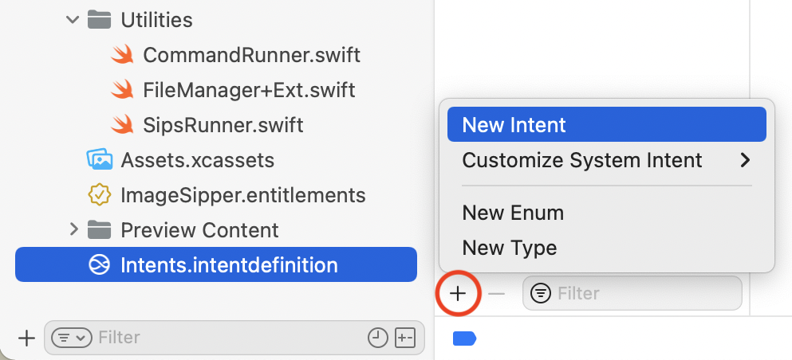
将你的新意图的名称改为PrepareForWeb，并可选择填入描述。它的任务是处理一张图片，使其适合在网页上使用。

在Parameters部分，点击+来添加一个新参数。
- 将新参数的名称改为
url。 - 将其
Display Name设置为image file，Type为File。 - 在弹出的
File Type中，选择Image。 - 最后，将
Siri Dialog的提示设置为Select an image file：

现在，你的意图希望得到一个名为url的参数--一个指向图像文件的文件路径URL。
向下滚动到Shortcuts app部分，将Input Parameter和Key Parameter都设置为url。
在 Summary中，开始输入Prepare url for web。当你输入url时，从自动完成的弹出窗口中选择url参数，然后完成输入摘要。
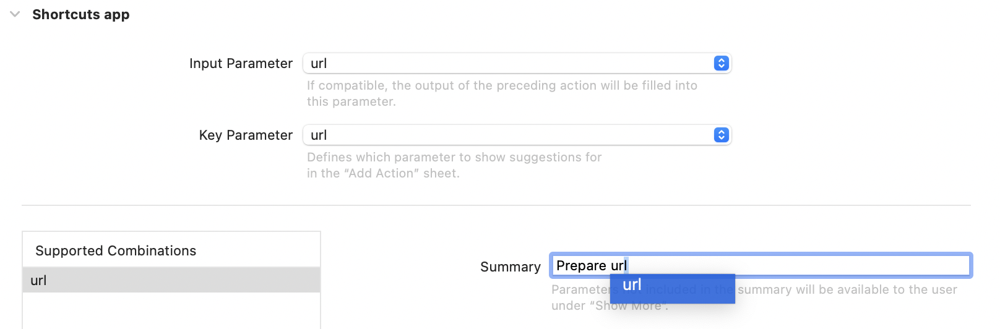
预览显示Prepare image file for web：

编码的意图¶
现在你已经定义了你的意图，按Command-B来构建这个应用程序。切换到Report navigator并查看最近的构建日志：

正如你所期望的，Xcode已经处理了你的Intents.intendefinition文件，但是在Compile阶段，Xcode编译了一个叫做PrepareForWebIntent.swift的文件。你不能在你的项目中看到这个文件，但是它定义了你的意图所需要的类和协议。
有了这些，你就可以开始使用它们了。
首先，切换回Project navigator，选择项目并点击ImageSipper目标。转到General选项卡。
在Supported Intents部分，点击+按钮。开始输入Prepare，当你可以时，从自动完成菜单中选择PrepareForWebintent。

现在项目知道你想使用这个意图，是时候开始为它编码了。
打开ImageSipperApp.swift，在文件的顶部添加这个，就在import SwiftUI之后：
import Intents
接下来，滚动到文件的末尾，定义一个新的类：
class PrepareForWebIntentHandler: NSObject,
PrepareForWebIntentHandling {
}
这设置了处理意图的类，它符合Xcode为你创建的一个协议。
Note
如果你想看一下Xcode生成的文件，Command-click``PrepareForWebIntentHandling并选择Jump to Definition。
Xcode现在会抱怨这个类不符合协议。点击错误标记中的红色圆球，并使用Fix来添加协议存根。
添加意图处理程序¶
这个修正添加了四个方法存根，并导致了两个更多的错误，因为Xcode提供了每个方法的两个版本。一个使用回调，另一个使用async。你想要的是异步方法，所以删除了那两个没有标记为async的方法。
现在你就剩下两个方法了。一个处理意图，另一个解决url参数。如果你的意图有更多的参数，你会有更多的解析方法--每个参数一个。
解析方法的存在是为了在你试图使用它们之前确保快捷方式已经提供了参数。
resolveUrl(for:)返回一个INFileResolutionResult以表示成功匹配或要求用户采取进一步行动。
将resolveUrl(for:)中的code占位符替换为：
// 1
guard let url = intent.url else {
return .confirmationRequired(with: nil)
}
// 2
return .success(with: url)
你正在创造两种可能的结果：
- 如果意图没有
url属性，你返回一个INFileResolutionResult，要求用户确认url。 - 如果有
url，你返回一个success的结果。
这个方法可以做更多的验证，它甚至可以返回一个不同的URL，但是这里没有必要。
现在你知道你已经有了一个url参数，你可以继续处理意图了。
用handle(intent:)替换code的占位符：
// 1
guard let fileURL = intent.url?.fileURL else {
// 2
return PrepareForWebIntentResponse(
code: .continueInApp,
userActivity: nil)
}
// 3
// sips call here
// 4
return PrepareForWebIntentResponse(
code: .success,
userActivity: nil)
你在这里做什么？
- 你已经检查了意图有一个
url，但是这个guard确认了它有一个fileURL。 - 如果没有，你就返回一个
PrepareForWebIntentResponse，告诉该意图打开应用程序。这个自定义响应类是自动生成的。 - 如果有一个有效的文件
URL，你调用sips来处理它。 - 最后，你发回一个
success的响应。
下一个阶段是编写代码，使用sips来准备文件。
编写动作¶
打开Utilities/SipsRunner.swift，给SipsRunner添加这个方法：
func prepareForWeb(_ url: URL) async {
// 1
guard let sipsCommandPath = await checkSipsCommandPath() else {
return
}
// 2
let args = [
"--resampleHeightWidthMax", "800",
url.path
]
// 3
_ = await commandRunner.runCommand(sipsCommandPath, with: args)
}
这种方法的作用是什么？
- 像往常一样，检查
sips命令的路径。 - 设置要对图片进行的修改。这是一个简单的编辑，确保没有超过
800像素的尺寸。随着相机和屏幕越来越大，互联网上的许多图像也越来越大。而我们都讨厌在网络不好的情况下等待网页加载缓慢的情况。 - 运行
sips命令。
要调用这个方法，打开ImageSipperApp.swift并将// sips call here替换为：
await SipsRunner().prepareForWeb(fileURL)
还有一个步骤。你必须设置一个Application Delegate来接收意图并将其传递给处理程序类。
配置应用程序代表¶
当使用SwiftUI架构时，你默认不会得到一个自定义的应用程序委托，但你可以自己设置一个。
还是在ImageSipperApp.swift中，在文件的底部添加这个新类：
// 1
class AppDelegate: NSObject, NSApplicationDelegate {
// 2
func application(
_ application: NSApplication,
handlerFor intent: INIntent
) -> Any? {
// 3
if intent is PrepareForWebIntent {
return PrepareForWebIntentHandler()
}
// 4
return nil
}
}
在这个代码中，你：
- 创建一个符合
NSApplicationDelegate协议的新类。 - 添加系统在收到意图时调用的
NSApplicationDelegate方法。 - 确保这是预期的意图，如果是的话，返回一个处理程序类的实例。如果你的应用程序有一个以上的意图，你将在这里检查每个意图。
- 对于未知的意图，返回
nil。
有了这个类，通过在ImageSipperApp的顶部添加这个属性，将其设置为你的应用程序的委托：
@NSApplicationDelegateAdaptor(AppDelegate.self) var appDel
这使用了一个SwiftUI属性包装器来分配一个自定义的应用程序委托。
就这样了。你已经将你的应用程序配置为发布一个捷径应用程序可以使用的意图。
使用快捷方式¶
按Command-B来构建应用程序，并将这个新的代码纳入构建的产品中。
接下来，打开Shortcuts应用程序。如果你在iOS设备上使用过Shortcuts，这看起来会很熟悉。它带有一个捷径库，并带来了你的iOS捷径，其中大部分与macOS无关。
在侧边栏选择My Shortcuts/Quick Actions，然后点击工具栏上的+按钮，创建一个新的快捷方式：
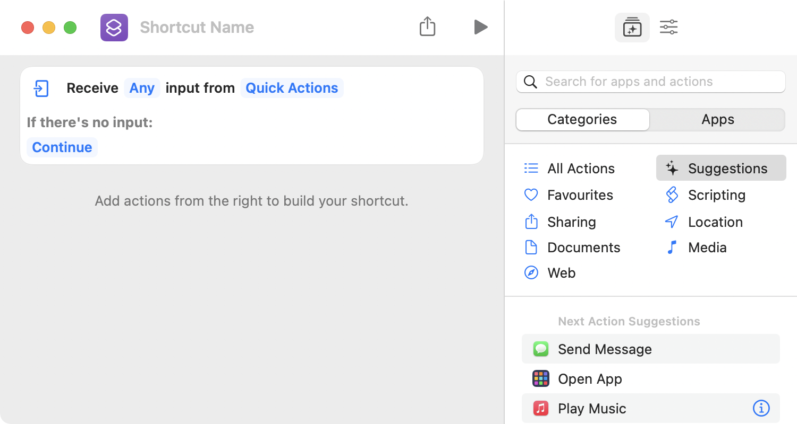
在Receive部分，点击Any，然后点击弹出窗口底栏的Clear。这将取消所有检查，并将Any改为No。

然后点击No，勾选Images。
接下来，改变没有输入时的情况。点击Continue，在弹出的菜单中选择Ask For。它建议询问Photos，这听起来很完美，但并不是你想要的。当你真正想选择一个图像文件时，它会把你带到你的照片库。点击Photos并从菜单中选择Files。
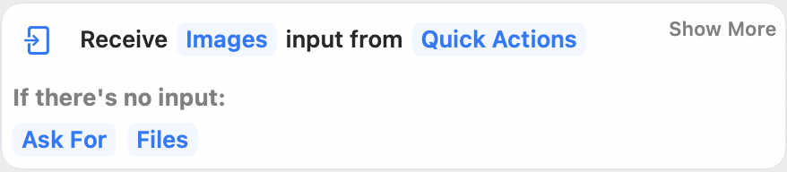
这给了你的快捷方式以输入；现在你要配置如何处理它。在右边的栏目中，选择Apps标签，向下滚动，找到ImageSipper。选择它，你会看到你的Prepare for Web意图。将鼠标悬停在意图上，看到它的Info按钮，然后点击它，看到你输入的描述和预期输入和输出的细节。

点击Add to Shortcut或将Prepare for Web的意图拖入你的快捷方式：
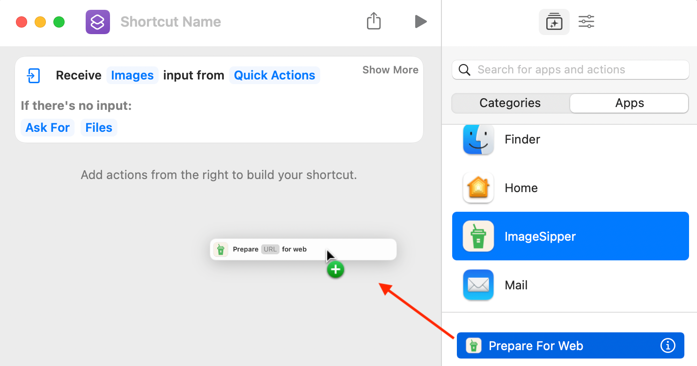
这就把url占位符设置为Shortcut Input，这正是你想要的。
快捷键的优势之一是它能够连锁操作。现在你已经为网络准备好了你的文件，在Finder中显示它怎么样？
点击应用程序列表中的Finder，将Reveal Files in Finder拖入你的快捷方式。你并没有改变URL，所以它也可以使用Shortcut Input。
现在，给你的快捷方式起个名字，然后点击它的图标，也可以选择颜色和图像。
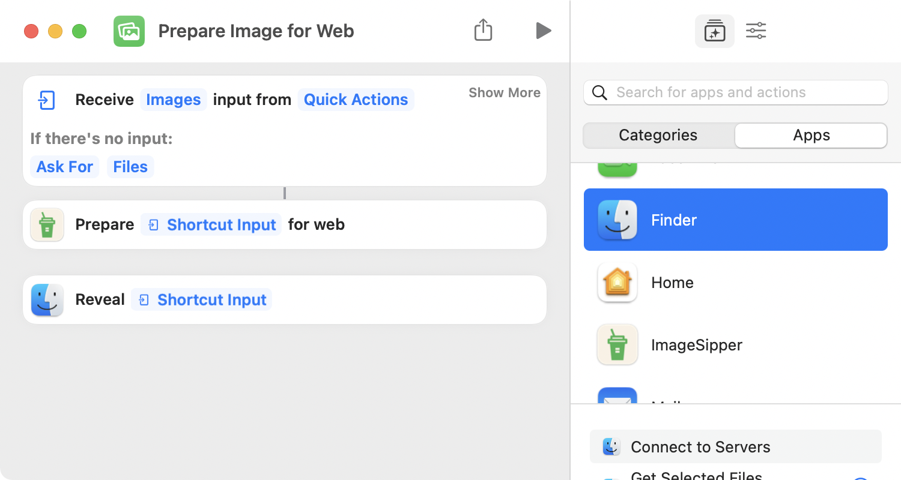
而现在你已经准备好去尝试了。
Note
这个ImageSipper快捷方式writes over了它的输入图像，所以复制你要用来测试快捷方式的图像，然后用这个副本工作。
点击Play按钮，由于你没有提供一个URL，你会得到一个文件对话框。选择一个大的图像并点击Open：

Note
在你第一次运行该快捷方式时，你可能会看到一个或多个隐私对话框。在所有对话框中点击Always Allow或OK，这样你就不必再回答它们了。
你的快捷方式运行后，Finder会显示你的图像。Finder的预览可能不会立即更新，所以按Command-I来确认图像是否缩小了。
访问你的快捷方式¶
你现在已经在一个快捷方式中使用了你的意图，从快捷方式应用中触发的。这是一个建立工作流程的好地方，但还有其他几种方法可以访问这个快捷方式。
回到Shortcuts应用程序，在Prepare Image for Web窗口中，点击右侧工具栏上的Shortcut Details 按钮：
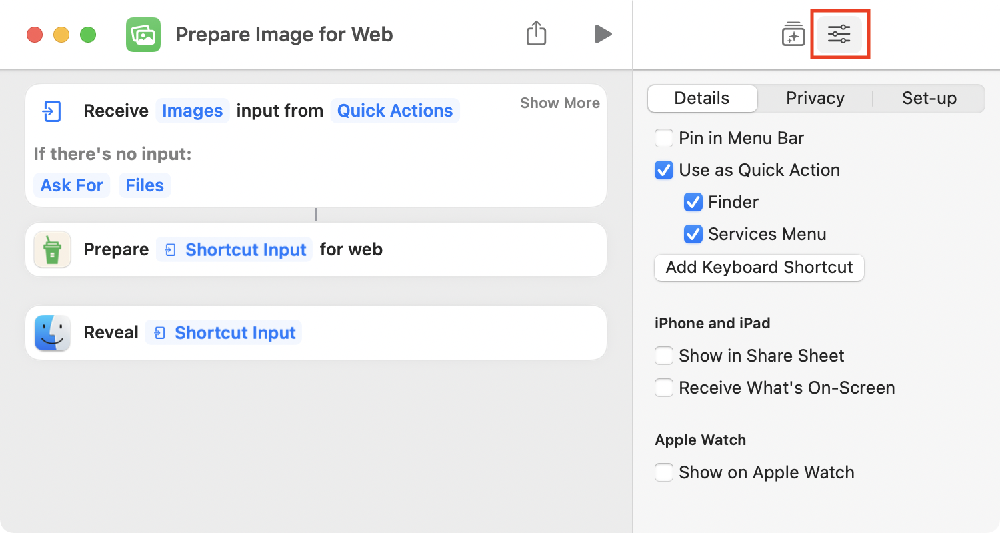
选择Privacy选项卡以查看您授予的权限。你可以随时在这里重置它们。
Details选项卡是你选择用户如何访问该快捷方式的地方。默认情况下，Use as Quick Action和Services Menu是打开的。勾选Finder，将其添加到列表中。
现在，回到Finder，选择一个大的图像文件。你现在有三种不同的方式来触发这个快捷方式。
- 右键单击图像文件，选择
Quick Actions ▸ Prepare Image for Web。 - 选择图像文件，在
Finder菜单中选择Services ▸ Prepare Image for Web。 - 确保你已经为你的
Finder窗口打开了Show Preview。如果没有，按Shift-Command-P来切换它。在预览下方，点击More…，选择Prepare Image for Web。

解决快捷方式的问题¶
当你还在处理上级应用程序时，快捷键的调试可能很棘手。这里有一些提示，如果你被卡住了，可以帮助你。
- 如果你在
Shortcuts应用程序中看不到你的意图，请删除Xcode的派生数据，然后重新建立。要做到这一点，打开Terminal并输入这个命令：
rm -rf ~/Library/Developer/Xcode/DerivedData
- 确保你的意图调用的命令中没有错误。重新利用一个现有的按钮来调用它，并确保它能工作。启动项目中的
CommandRunner版本有错误报告，这可能有帮助。 - 如果你的快捷方式挂起，而且其他的修复方法都不起作用，请重新启动你的计算机。
关键点¶
- 你可以编写一个应用程序在内部执行自动化，但你的应用程序也可以提供自动化供
macOS使用。 - 服务是系统范围内的实用工具。当设置你的应用程序来发布服务时，重要的是要确保它只在适当的时候出现。
- 苹果的
Shortcuts应用是一种自动化服务，允许用户建立工作流程。意图将服务从你的应用程序提供给快捷方式。
接下来去哪？¶
关于服务的更多信息，请查看苹果的服务实施指南。这是一份相当老的文件，但仍然有效。
要了解创建快捷方式，请观看WWDC 2021的Meet Shortcuts for macOS。
想一想你可以如何为这个应用添加更多的服务或意图。或者，你有另一个你想自动化的应用程序？你现在有了这些工具，那就出去使用它们吧!